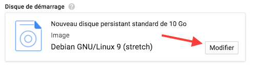
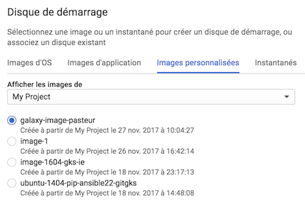
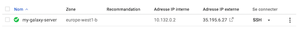

Spin off a virtual Machine
1. Go to the Google Cloud Dashboard and select "Compute Engine" on the left hand menu bar
2. Select the submenu "Instances de VM"

3. Click on the top bar menu the "CREER UNE INSTANCE" panel

4. Put name my-galaxy-server, Zone europe-west1-b (or c), Type de machine 8 vCPU + 30 Go de mémoire.

5. Disque de Démarrage: Click on Modifier

6. Select the top menu images personnalisées (custom images)

7. Click on the rolling menu Afficher les images de and select the My Project - main-sunset-133416
What is important here is the identifier main-sunset-133416
8. Check the button to select galaxy-image-pasteur

9. At the bottom of the same form, choose 100 Go for the Disk Size (Taille). Note that this size should be already selected.

Click the Sélectionner button to leave the selection Disque persistant standard / Standard persistant drive
10. Back to the main form, Click Authorize HTTP traffic / Autoriser le traffic HTTP

11. Click Créer / Create
12. After ~1 minute or so, the VM turns on "green" and an ssh menu becomes selectable

13. Click on the http link provided in the Adress IP externe column
You should now be able to access to your own Galaxy server instance, but not that this phase can take an additional minute or so, this is the time to start all the galaxy services in the new server instance.
14. Immediately Log in to your server as the administrator

And log in with admin@galaxy.org : admin